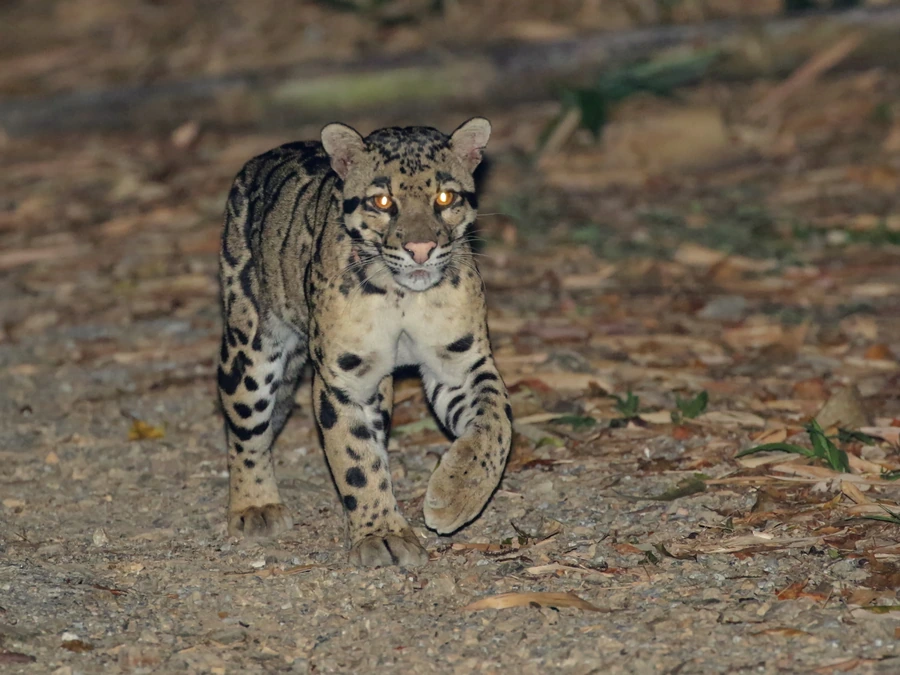

哺乳动物 · 动物界
云豹 Neofelis nebulosa

亚洲热带森林中的树栖猫科动物，犬齿的相对比例在猫科中最长，云状大斑纹与倒挂攀爬的能力独具特色。
- 分类
- 门脊索动物门纲哺乳纲目食肉目科猫科属云豹属
- 栖息环境
- 热带雨林、常绿阔叶林与山地森林，树栖为主
- 地理分布
- 中国南方、东南亚及喜马拉雅山南麓，尼泊尔、印度东北部也有分布
- 保护级别
- IUCN 易危（VU）；中国国家一级保护动物
物种志
云豹体长 0.7–1.1 米，尾长 0.6–0.9 米，体重 11–23 kg。它的被毛为浅黄至灰褐色，两侧覆盖大块深色云状斑纹，斑纹边缘有黑色轮廓，中央颜色较浅；头部有小斑点，四肢粗短有力，尾巴长而蓬松，几乎与身体等长。
云豹分布于中国南方、东南亚及喜马拉雅山南麓，栖息于热带雨林、常绿阔叶林和山地森林，多在树上活动，也下到地面捕猎。它以树栖能力闻名，能头朝下沿树干倒挂爬行，从树上扑击猴、鸟类和松鼠，也捕食野猪幼崽、鹿和山羊。云豹多在晨昏和夜间单独活动，用尿液和抓痕标记领地；雌兽妊娠期约 85–95 天，每胎 1–5 仔。因森林砍伐和盗猎，云豹数量持续下降，中国将其列为国家一级保护动物。
形态与习性
- 食性猴类、鸟类、松鼠、鹿与野猪幼崽
- 体长0.7–1.1 m，尾长 0.6–0.9 m
- 体重11–23 kg
- 寿命野外约 11–15 年
- 繁殖妊娠期约 85–95 天，每胎 1–5 仔
- 犬齿犬齿长约 4.5 cm，比例在猫科中最长
- 树栖可头朝下沿树干倒挂攀爬
趣味知识
- 云豹的犬齿长约 4.5 cm，相对头骨的比例在猫科中最长。
- 它能头朝下沿树干倒挂爬行，从树上直接扑向猎物。
- 云状大斑纹边缘深、中央浅，是它得名的由来。
- 云豹的尾巴几乎与身体等长，帮助它在树上保持平衡。